브리치
SKILL
Q - 섬광 폭발
실명탄을 장착합니다. 발사하면 벽을 통과하고 빠르게 효과가 발생하는 폭발을 일으켜
섬광을 본 모든 플레이어를 실명시킵니다.
- 
E - 균열
지진파를 장착합니다. 발사를 길게 누르면 사거리가 늘어납니다. 키를 떼면 지진파를 날려
경로상에 있는 적과 대상 범위 내의 모든 적을 멍하게 합니다.
C - 여진
융합 에너지탄을 장착합니다. 발사하면 벽을 통과하고 느리게 효과가 발생하는
폭발을 일으켜 대상 범위 내의 모든 적에게 큰 피해를 입힙니다.
- 
Q - 지진 강타
실명탄을 장착합니다. 발사하면 벽을 통과하고 빠르게 효과가 발생하는 폭발을 일으켜
섬광을 본 모든 플레이어를 실명시킵니다.